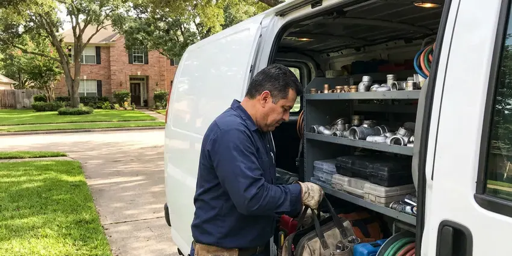

Commercial Plumbing in Appleton, WI
HKV Plumbing delivers dependable commercial plumbing solutions for businesses across Appleton, WI.
- Quick Commercial Service
- After-Hours Scheduling
- Local Wisconsin Experts
- Licensed & Insured

Need Commercial Plumbing Service in Appleton, WI?
Call today for emergency service or to set up a preventive maintenance plan.
Commercial Plumbing Services for Wisconsin Businesses in Appleton, WI
HKV Plumbing understands that a broken restroom or backed-up kitchen drain can close your business for the day. Our plumbers respond quickly, communicate with your facility manager and document every job for your records.
Our expertise includes:
- Backflow prevention device testing and repair
- Commercial drain clearing and hydro-jetting
- High-efficiency commercial water heater repair and replacement

Additional Plumbing Maintenance Services in Appleton, WI
Our maintenance and specialty plumbing services in Appleton, WI catch small problems before they become emergencies.


Customers
Why Choose HKV Plumbing for Commercial Plumbing in Appleton, WI?
Choosing the right commercial plumber means selecting a partner who understands the specific challenges of business plumbing systems. Our team is equipped with modern diagnostic tools and proven techniques to resolve even the most complex problems efficiently.
- Code Compliant, Our work satisfies commercial plumbing, backflow and health department requirements.
- Detailed Records, You get invoices, photos and test reports for every service visit.
- Advanced Equipment, We use commercial-grade tools like hydro-jetters and video inspection cameras to provide accurate and lasting repairs for your plumbing systems.
Citywide Coverage
Property managers rely on us across Appleton and nearby areas for single buildings and multi-site portfolios. We coordinate access, keys and tenant notices to keep things smooth.
Experienced Team
Each member of our HKV Plumbing commercial plumbing crew is licensed and insured, bringing years of dedicated experience to every job. We ensure our team stays updated on the latest commercial plumbing technologies and Wisconsin codes to provide top-quality service.
Safety-First Approach
Safety is paramount in all commercial plumbing projects undertaken by HKV Plumbing. We adhere to strict safety protocols and make sure all installations and repairs meet or exceed industry standards and local Appleton building codes, protecting your property and employees.
Trusted Certified Appleton Plumbing Services Professionals
At HKV Plumbing, we take pride in providing licensed, certified plumbing services throughout Appleton, WI. Backed by recognized industry credentials, our experienced plumbers combine technical skill with genuine customer care. Whether it is repair, installation, or maintenance, we follow strict safety and quality standards to deliver long-lasting results you can trust.
Call Us Now PHCC Plumbing Contractor Recognition
PHCC Plumbing Contractor Recognition Better Business Bureau (BBB) Accreditation
Better Business Bureau (BBB) Accreditation Angi Certified Pro
Angi Certified Pro ISO 9001 Quality Management Certification
ISO 9001 Quality Management CertificationTrusted Commercial Plumbing Services in Appleton, WI
Commercial Plumbing Costs and Maintenance Plans in Appleton, WI
Backflow tests usually cost $75 to $175 per assembly, while grease line jetting often runs $350 to $900 depending on length and buildup. Emergency after-hours service carries a higher rate. Preventive maintenance plans spread costs evenly and reduce surprise repairs. We give you written proposals so you can budget with confidence.

Grease Trap and Interceptor Service in Appleton, WI
Restaurants and food service sites must keep grease out of the public sewer. We inspect and service grease traps and interceptors, replace baffles and clear the lines leading to them. Hydro jetting removes hardened grease from kitchen drains that cables cannot clear. Regular service helps you pass health inspections and avoid sewer backups during the dinner rush.
Commercial Restroom Plumbing in Appleton
Busy restrooms take a beating, and a broken flushometer or leaking urinal frustrates customers. We repair and replace Sloan and Zurn flush valves, sensor faucets, wall-hung toilets and carriers. We also install ADA-compliant fixtures and grab bar backing during remodels. Quick repairs keep your facilities clean and open.
Tenant Improvement and Build-Out Plumbing in Appleton, WI
When a space changes hands, the plumbing often needs to change too. We install new restrooms, break rooms, mop sinks and kitchen fixtures for tenant improvements. Our team works from your plans, coordinates with general contractors and passes inspections on time. We also cap and abandon old lines properly.
Commercial Pipe Repair & Repiping in Appleton, WI
Commercial properties in Appleton, especially older buildings, often face problems with aging plumbing infrastructure, including leaks, corrosion, and burst pipes. We provide expert pipe repair, using durable materials like copper, PEX, and various grades of PVC, suitable for commercial demands. For extensive damage or frequent problems, repiping might be necessary to upgrade your system and prevent future disruptions. Our team can assess your current piping, identify weak points, and recommend the most cost-effective and long-lasting solutions for your business.
Commercial Water Heater Repair & Installation in Appleton, WI
Commercial water heaters are often larger, more complex, and operate under greater stress than residential units, often requiring specialized repair and maintenance. We service all major brands including A.O. Smith, Rheem, and Bradford White commercial models, making sure your business has a consistent supply of hot water. Whether it's a gas, electric, or tankless system, our technicians are skilled in diagnosing issues like pilot light failures, heating element malfunctions, or pressure relief valve problems specific to high-demand commercial use in Appleton. Proper sizing and installation are essential for efficiency and longevity.
Emergency Commercial Plumbing in Appleton
A plumbing emergency can stop business operations, leading to lost revenue and potential property damage. HKV Plumbing offers fast-response emergency commercial plumbing services throughout Appleton, WI. Whether it's a major burst pipe, a severe sewage backup, or a critical water heater failure, our team is equipped to handle urgent situations 24/7. We arrive quickly, assess the problem, and put in place immediate solutions to limit damage and restore functionality, helping your business get back on track with minimal downtime.

Commercial Drain Cleaning in Appleton
HKV Plumbing offers specialized commercial drain cleaning services to keep your business's plumbing flowing freely. We use industrial-grade equipment like hydro-jetting machines, which use high-pressure water to scour the inside of pipes, effectively removing grease, food waste, and other common commercial blockages. This method is far more effective than traditional snaking for large-diameter commercial lines and ensures a thorough clean, preventing recurring clogs that can disrupt your operations in Appleton.
Expert Commercial Plumbing Near Me in Appleton, WI
When you search for 'commercial plumbing near me' in Appleton, WI, HKV Plumbing is the dependable local expert ready to serve your business. Our proximity and understanding of local commercial properties mean faster response times and plumbing solutions tailored to the specific challenges faced by businesses in our area. We are committed to being your reliable, nearby commercial plumbing partner.
We are dedicated to providing fast and efficient commercial plumbing solutions across Appleton, WI. Our technicians are strategically dispatched to keep quick response times, minimizing disruptions to your business. Trust HKV Plumbing to be your accessible, go-to commercial plumbing expert, ready to serve your property with skill and precision.
HKV Plumbing at a Glance
- Fully licensed plumbing team covering Appleton, WI
- Same-day appointments and 24/7 emergency response
- Clear written estimates, no hidden fees
- 4.8-star rated by 448+ Wisconsin customers
Appleton Map
Appleton Information
- Population
- 74,719
- Area codes
- 920/715/414
- Service area
- Appleton and communities within 40 miles
- Nearby
- Oshkosh, Green Bay, Sheboygan, Wausau
Heavy daily demand and strict backflow rules make dependable plumbing essential for businesses in Appleton, WI. Private wells serve a large number of rural homes, and some Wisconsin well water carries iron, nitrates or bacteria that call for regular testing.
Expert Services
Trust our professionals for reliable HKV Plumbing solutions in Appleton, WI.
Our Specialized Plumbing Services in Appleton, WI
At HKV Plumbing, we provide a complete range of plumbing services across Appleton, WI. From leak detection to full system installations, our team ensures fast, precise, and affordable service for both residential and commercial properties. Explore our core services below:


How Our Commercial Plumbing Process Works in Appleton, WI
At HKV Plumbing, our commercial plumbing process in Appleton, WI is designed for efficiency and minimal disruption to your business.
Request a Quote
Contact HKV Plumbing at (414) 432-4641 to schedule a commercial plumbing service or request an emergency response. We'll gather details about your issue and dispatch a qualified technician to your Appleton business.
On-Site Assessment
Our commercial plumber arrives promptly to your business in Appleton, conducting a thorough diagnosis of the plumbing problem using specialized tools. We will clearly explain the issue and propose the most effective solution.
Expert Service
With your approval, our technician will perform the necessary commercial plumbing repairs, installations, or maintenance. We use high-quality parts and follow industry best practices, delivering lasting results for your Appleton business.
Frequently Asked Questions About Commercial Plumbing in Appleton
Commercial plumbing costs in Appleton vary widely depending on the type and complexity of the service. A minor drain clog might range from $150 to $400, while a commercial water heater installation could be $2,000 to $10,000 or more. Repiping an entire commercial building can run into tens of thousands. We provide clear, upfront estimates after a thorough assessment.
Regular maintenance is key to preventing commercial plumbing issues. This includes scheduled drain cleanings, annual backflow testing, routine inspections of water heaters and fixtures, and educating employees on proper waste disposal. Preventive care helps avoid costly emergency repairs and extends the life of your plumbing system in Appleton.
Staff can handle simple tasks like replacing toilet seats or clearing minor clogs. Backflow work, gas lines, water heaters and code-regulated repairs require a licensed plumber.
HKV Plumbing services and installs all major brands of commercial water heaters common in Wisconsin, including AO Smith, Rheem, Bradford White, and State Water Heaters. Our technicians are trained on the latest models and technologies to ensure efficient and reliable hot water for your business.
The frequency of commercial drain cleaning in Appleton depends heavily on the type of business. Restaurants, for example, may need quarterly or even monthly hydro-jetting due to grease accumulation. Office buildings might only require annual cleaning. Proactive maintenance prevents costly emergencies and keeps your business running smoothly.
For most businesses in Appleton, we recommend a comprehensive commercial plumbing inspection at least once a year. High-traffic establishments like restaurants or manufacturing plants might benefit from quarterly inspections to prevent major issues and ensure compliance with health and safety regulations.
Yes, we install plumbing from plans, pull permits and coordinate with your general contractor. We schedule inspections to keep your opening date on schedule.
Yes, our commercial repairs and installations include written warranties on parts and labor. Manufacturer warranties apply to new equipment too.
What People Are Saying About Our Plumbing Experts?

Robert G.
The trenchless sewer replacement saved our front yard. They walked us through the camera inspection footage first so we knew exactly what we were paying for.
Sewer Line Replacement · Sheboygan, WIJames P.
Our commercial plumbing system had a leak under the sink, and HKV Plumbing handled it professionally. The plumbers arrived quickly and restored everything without disruption to our customers.
Commercial Plumbing · Appleton, WI
Mark T.
When our office needed drain cleaning, HKV Plumbing provided quick, reliable service. The plumber arrived on time and made sure every drain flowed perfectly before leaving. Very satisfied.
Drain Cleaning · Sheboygan, WI
Daniel K.
A pipe burst at 11 pm and they actually answered. The plumber showed up within the hour, shut everything down, and had us back to normal the next morning. Could not ask for more.
Emergency Plumbing · Appleton, WI
Laura S.
I scheduled a water heater replacement, and the team made the process smooth and affordable. The new unit works perfectly, and they cleaned up after completing the job.
Water Heater Replacement · Milwaukee, WI
Emily R.
I called HKV Plumbing for plumbing repair, and the technician was fast, polite, and thorough. They explained the problem clearly and fixed it the same day. I will definitely hire them again. Highly recommended!
Plumbing Repair · Milwaukee, WI